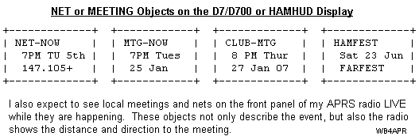
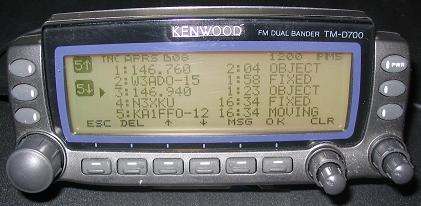
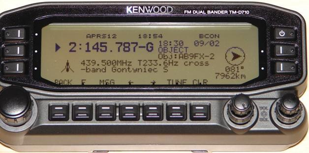

Using APRS for Hamfest Support
Using APRS for Hamfest Support
Using APRS for Hamfest Support
Using APRS for Hamfest Support
This page tells Hamfest organizers as well as all Hamfest attenders how they can use APRS to optimize their experience at these exciting events! (or any other event)...
LOCATION:The most valuable aspects are the display of the local HAMFEST object on the GPS screens of all APRS Mobiles as shown to the right. This is the AVMAP-G5 GPS which displays the full APRS set of symbols. Anyone driving in the area will not only see the bold HFEST-ddx object show up on their radio front panel displays to alert them to an upcling hamfest, but the SYMBOL will also show up on their attached GPS map. (This same technique can also work for AMSAT-ddx events)
Not only does the object show the location of the hamfest, but it also shows the date using the dd digits. These are the day of the month. In addition, so that all hamfests in the world are unique, the HFEST-ddx object name has the x byte that can be anything to make this event unique.
 TALK-IN FREQUENCY: In addition to the map object showing the location
of the hamfest so travelers can just drive right to it, the object also contains
the talk-in frequency and Tone (if any). Many APRS radios now have a
tune button that can automatically tune right to this frequency with one button
push.
TALK-IN FREQUENCY: In addition to the map object showing the location
of the hamfest so travelers can just drive right to it, the object also contains
the talk-in frequency and Tone (if any). Many APRS radios now have a
tune button that can automatically tune right to this frequency with one button
push.
But not only does this highly visible HAMFEST object advertise the event, but it also provides more information to the community about the event. Here are some of the ways to use APRS to enhance your Hamfest experience.
BACKGROUND: Too many people have been misslead to think of APRS as a vehicle tracking system, when in fact it was desigend to be the opposite. A local real-time information dissemination and display system TO the mobile operator. The objective was for the moible APRS operator to see on the front panel of his radio ALL relevant local information about ham radio and activities. Nothing is more important than having Hamfests show up on their maps!
This is all part of the Local Info Initiative which is a fundamental part of APRS in informing radio mobile of the situation around them. Please see that web page about all the info we should be pushing to mobile operators. Especially local recommended voice frequencies, Echolink or IRLP channels for travelers in the area.
 MOBILE DISPLAYS = TINY WEB PAGES: When the APRS radios came out over 10 years ago that could display this info directly on the radio front panel, we called this info Tiny-Web-Pages as presented at the year 2000 DCC. . The intent was to have all local ham radio activities of immediate local interest show up on these radios to inform mobiles in real time about evertyhing going on in ham radio around them... such as WX, Satellites, DX, traffic, Nets, Meetings and so forth. Some examples as they appear on the small D7 screen are shown here to the right:
HAMFEST OBJECTS: You can enter an object using any APRS client, or if all you have is an old TNC, you just put the object in the TNC BText and set the beacon rate to once every 15 minutes. Set the UNPROTO path to UNPROTO APRSHF VIA WIDE1-1 and then set the BText to:
;HFEST-ddx*111111/DDMM.mmN/DDDMM.mmWhFFF.FFFMHz Talk-in...
Where ddx is the day of the month and the unique identifer byte
Where DDMM.mmN/DDDMM.MMW is the lat/long of the hamfest
Where h is the Hamfest symbol ( the red object as shown above)
(or S for satellite or `(grave accent) for satellite station)
Where FFF.FFFMHz is the talk-in frequency followed by any other text.
SEE THEM ALL! By having each Hamfest object be unique, then it is easy to use any of the APRS web pages to see all the hamfests currently on the air. For example, just wild card the HFEST* prefix and all hamfests should show up. Try this HFEST* search on FINDU.COM.
OBJECTS FROM THE D700 MOBILE: . If you are the first person to arrive, and no one has taken the initiative to put the hamfest object on the map, then you can do it easily from your APRS radio. Just momentarily change your APRS mobile's MYCALL to "HFEST-dd" and then leave your radio on, and beaconing once every 10 minutes or so. This will let everyone after you, drive right to the HAMFEST (your car). Don't forget to then switch your MYCALL back to your call after the event. This works well for club meetings as well! See Sending Objects from the D700.

SOME DISPLAY EXAMPLES: The display at the top of this page is what flashes on the front panel for 10 seconds when the packet is received. If the driver does not happen to see this display, then the Repeater will show up as an object on the radio's STATION list as shown to the right on a D700:
In this case, the newer 146.76 repeater has appeared on the list and the older repeater from the previous town is going down the list. Of course, usually it is much further down the list than shown here. When the user sees one of these repeater objects in his STATION list he can know that he is in DIRECT range of that repeater and he can select it to see any other amplifying information such as tone, range, nets and meeting times.

FREQUENCIES ON STATION LIST on the D710: . In the next photo to the right, the new D710 even has a column on the station list for displaying the operating frequency if it is included in the station's packet. In this case, the first three are Local Repeater Objects, but the first one of those is a cross-band repeater, so both the output frequency (object name) and input frequency can be shown. . The last two stations on the list are another D710 and D7 simply showing their current operating frequency.
When an object is selected as shown below left, the split frequency cross band repeater example above shows on a D710 display below (complements of AB9FX). His example shows "233.6 Hz" instead of the more compact recommended "T233 RXXm" tone and range.
 . .
The yellow D700 screen on the right above shows an example of the correct final format, though it does not use the 3rd line of 8 characters to also include the club meeting dates. Note also that TONE is now Tnnn and typical useable range is R33m in this case. The local repeater frequency object shows the frequency, the tone, typical operating range and weekly net times.
Please read more about the local info that should be distributed on APRS so that it is avaialbe to all mobile operators and travelers when they enter the area. Please see the Local Info Initiative and the Universal Messaging/Contact Initiative. . The screens below show additional types of inormation such as the local repeater, and IRLP and Echolink frequencies.


APRS is a two-way local Information Distribution and Communication System
(not just a vehicle tracking system). See APRS misconceptions!
The objective is Human-to-human local real-time info and communications! .
MESSAGING: Any easy way to get the Talk-in's attention is to simply send him a request by APRS message. If he is properly set-up in front ot an APRS display, he will see your message and ccall you next! To send an APRS message, just press the MSG button, select INPUT on the MSG Menu, enter EMAIL as the address, and make the first text of the message be an email address followed by your message. . In the example below, an EMAIL to A3XYZ@AMSAT.ORG says OK in OceanCity with HT & whip!. .


If your email is digipeated, then you will see MY MESSAGE flashed on the screen indicating success.
Bob Bruninga, WB4APR